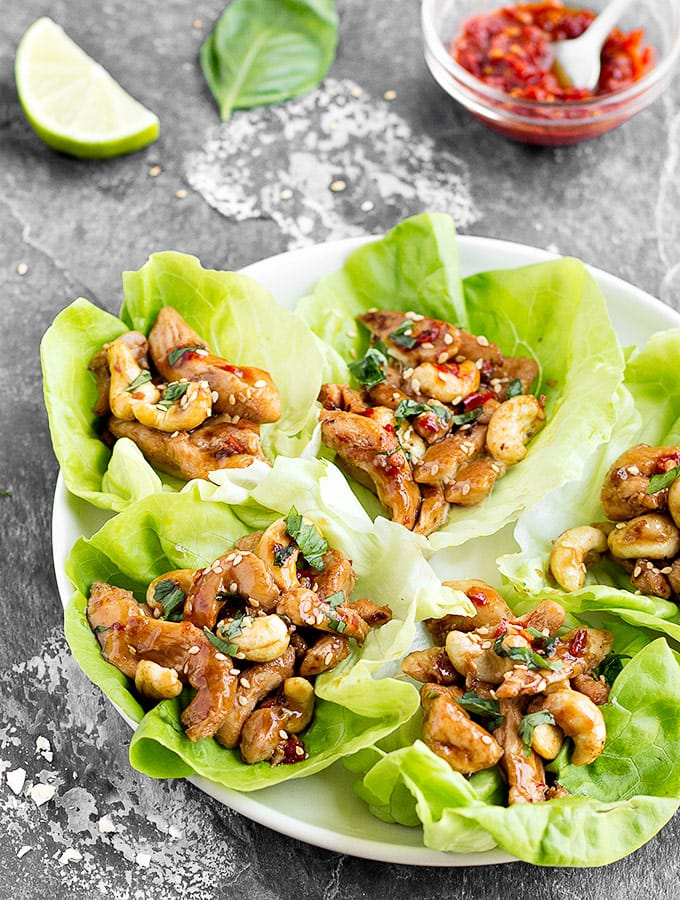

Buffalo Chicken Dip
My favorite lettuce is Boston as the leaves are perfectly shaped like cups and they are easy to fold. Other options are iceberg, romaine, or butter lettuce.

As Easy As Apple Pie / Via aseasyasapplepie.com
Ingredients
- 1 lb (450 g) boneless, skinless chicken breasts cut into bite seized pieces
- 4 tablespoons oyster sauce
- 4 tablespoons low-sodium soy sauce
- 2 tablespoons sesame oil or olive oil
- 2 cloves garlic minced or grated
- 1 teaspoon grated fresh ginger
- 1 teaspoon chili paste
- 1 jar (24 ounces) marinara sauce, warmed
- 8 Boston lettuce leaves
Toppings (optional): thinly-sliced basil, sesame seeds
Steps
- Place the chicken in a zip lock bag with the oyster sauce, soy sauce and chili paste.Let the chicken marinate for 10 minutes.
- Heat a large skillet over medium heat. Add 1 tablespoon of sesame oil, garlic, ginger, and cook for 30 seconds or until fragrant.
- Increase the heat to medium high, add the chicken and the remaining oil, and stir-fry until cooked through, about 5 minutes.
- Once the chicken is cooked, add the cashews and cook for another 1-2 minutes.
- Spoon the mixture into the individual lettuce leaves, top with basil and sesame seeds and serve.